Clockspring Assembly / Spiral Cable: Service and Repair
Cable Reel Replacement
WARNING: Store a removed airbag assembly with the pad surface up. If the airbag is improperly stored face down, accidental deployment could propel the unit with enough force to cause serious injury.
CAUTION:
- Carefully inspect the airbag assembly before installing it. Do not install an airbag assembly that shows signs of being dropped or improperly handled, such as dents, cracks or deformation.
- Always keep the short connectors on the airbags and seat belt pretensioners when the harness is disconnected.
- Do not disassemble or tamper with any airbag assembly.
NOTE (L and LS models): Before disconnecting the battery cables, be sure you get the customer's anti-theft radio code number.
1. Disconnect the battery negative cable and then the positive cable.
2. Make sure the wheels are aligned straight ahead.
3. Remove the dashboard lower cover and glove box.
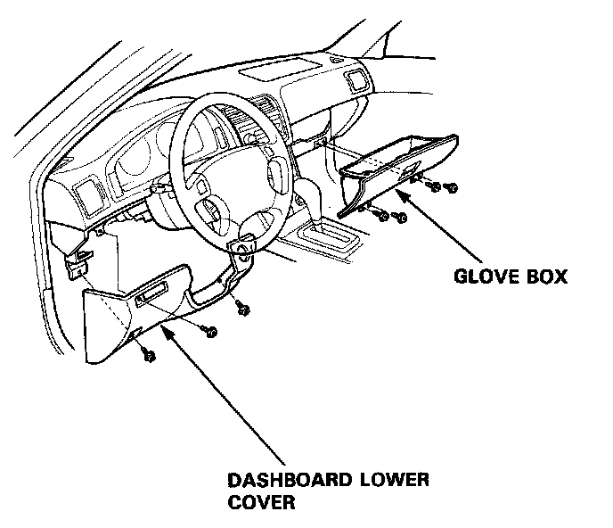
4. Before disconnecting any part of the SRS wire harness, install the short connectors - refer to the "Short Connector Installation" procedure.
5. Remove the driver's airbag assembly from the steering wheel (two T30 TORX� bolts), then remove the steering wheel nut.
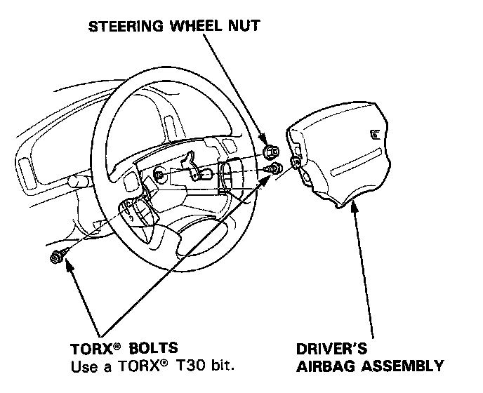
6. Disconnect the connectors from the horn and cruise control set/resume switches, then remove the cable reel 3-P connector from its clips.
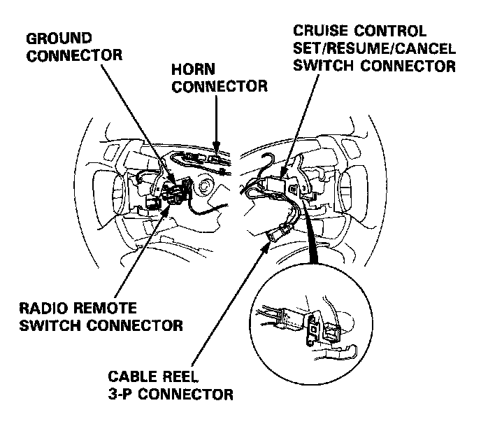
7. Remove the steering wheel from the column.
8. Remove the upper and lower column covers.
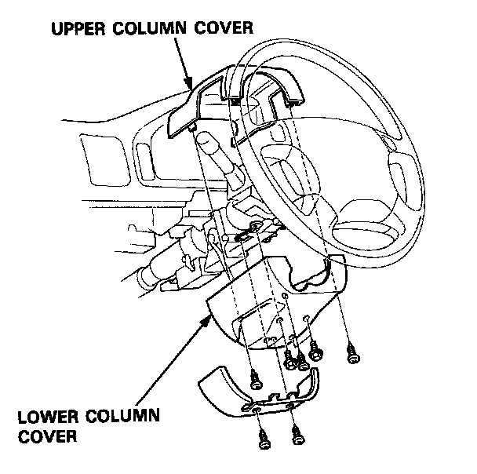
9. Remove the four bolts and remove the cover under the steering column.
10. Disconnect the 7-P connector between the cable reel and SRS main harness, then remove the connector holder from the steering column.
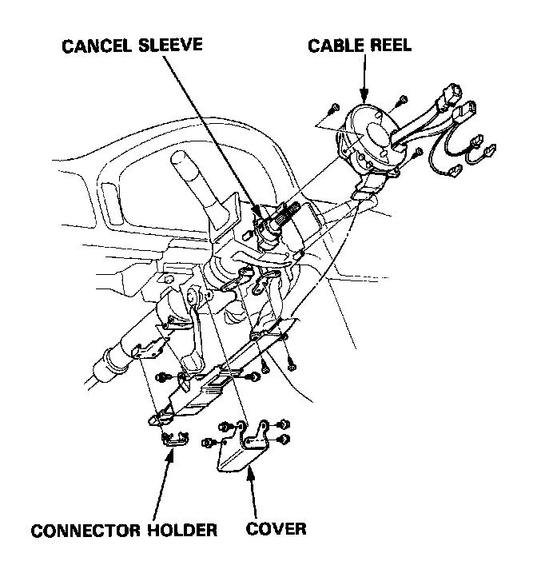
11. Remove the cable reel from the column.
CAUTION:
- Before installing the steering wheel, the front wheels should be aligned straight ahead.
- Be sure to install the harness wires so that they are not pinched or interfering with other car parts.
- After reassembly, confirm that the wheels are still turned straight ahead and that steering wheel spoke angle is correct. If minor spoke angle adjustment is necessary, do so only by adjusting of the tie-rods, not by removing and repositioning the steering wheel.
12. Align the cancel sleeve grooves with the cable reel projections.
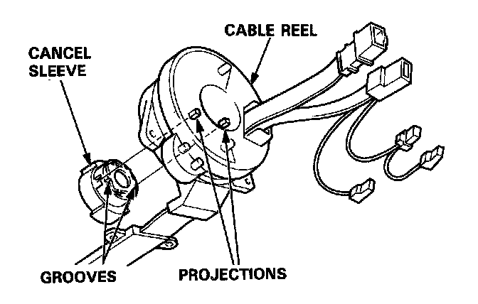
13. Carefully install the cable reel on the steering column shaft. Then attach the connector holder to the steering column. Reinstall the cover.
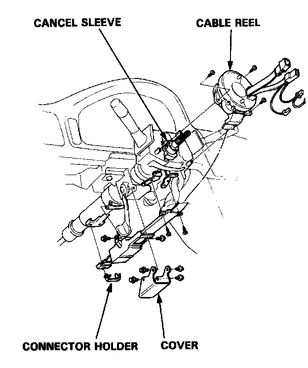
14. Install the steering column upper and lower covers.
15. Center the cable reel.
Do this by first rotating the cable reel clockwise until it stops.
Then rotate it counterclockwise (approximately two turns) until:
- The yellow gear tooth lines up with the alignment mark on the cover.
- The arrow mark on the cable reel label points straight up.
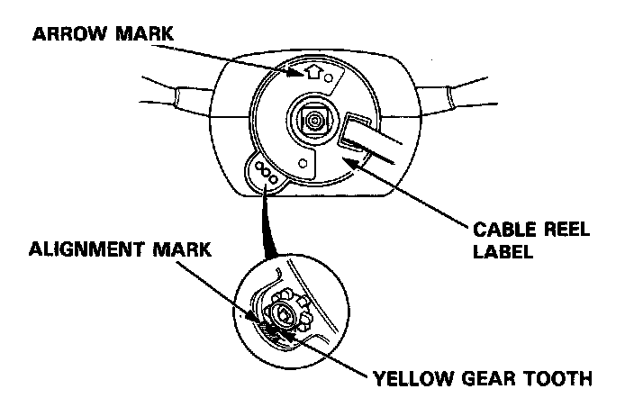
16. Install the steering wheel and attach the cable reel 3-P connector to the steering wheel clips.
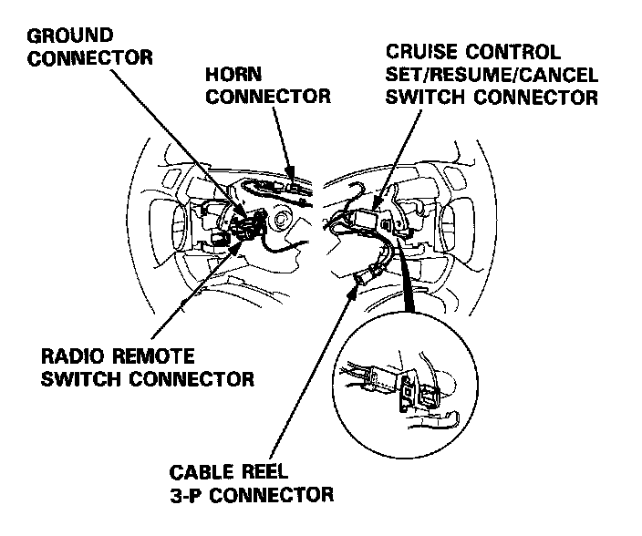
17. Connect the horn connector and cruise control set/resume switch connector.
18. Install the steering wheel nut.
19. Install the driver's airbag assembly.
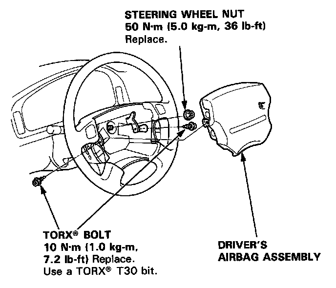
20. Connect the cable reel 7-P connector to the SRS main harness, then install the dashboard lower cover.
21. Remove the short connectors from the front passenger's airbag connector and from the SRS main harness connector.
22. Reconnect the front passenger's airbag 3-P connector to the SRS main harness connector.
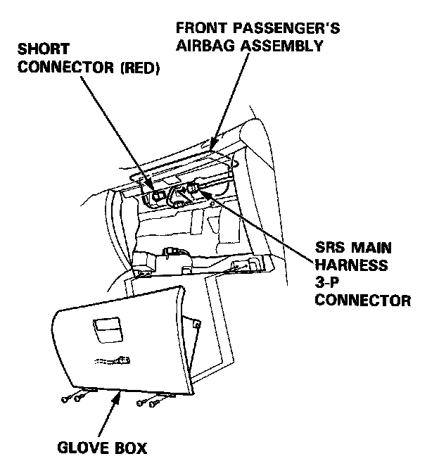
23. Reinstall the glove box.
24. Remove the short connectors (RED) from the driver's airbag connector and from the cable reel 3-P connector.
25. Reconnect the driver's airbag 3-P connector to the cable reel 3-P connector. Attach the short connector (RED) to the access panel, then reinstall the panel on the steering wheel.
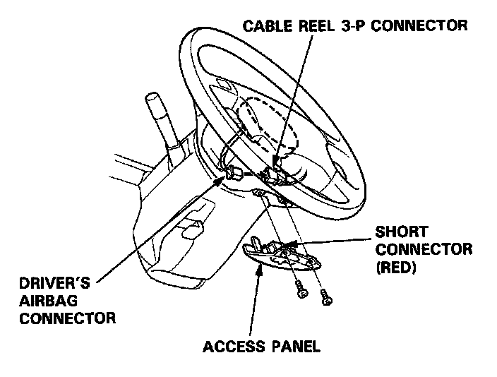
26. Remove the short connectors (RED) from the seat belt pretensioners, then attach them to their holders.
27. Reconnect the left side wire harness 3-P connector to the driver's seat belt pretensioner and the main wire harness 3-P connector to the front passenger's seat belt pretensioner.
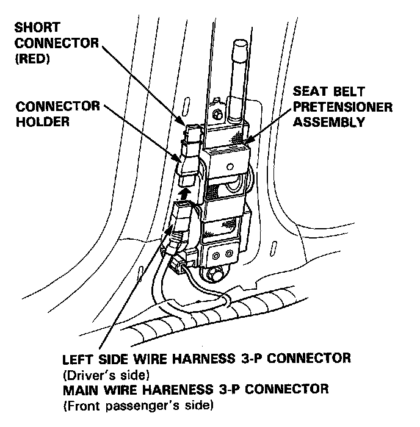
28. Reinstall the "B" pillar lower panel.
29. Reconnect the battery positive cable, then the negative cable.
30. After installing the cable reel, confirm proper system operation:
- Turn the ignition ON (II): The instrument panel SRS indicator light should go on for about six seconds and then go off.
- Make sure both horn buttons work.
- Make sure the headlight and wiper switches work.
- Take a test drive and make sure the cruise control set/resume/cancel switch works.
- Rotate the steering wheel counterclockwise to make sure the yellow gear tooth lines up with the alignment mark on the cover.
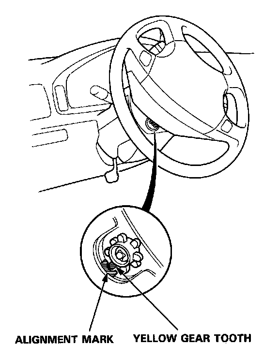
31. Enter the customer's code number to restore radio operation.